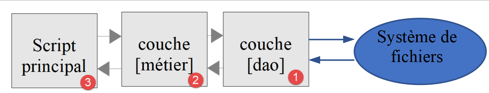
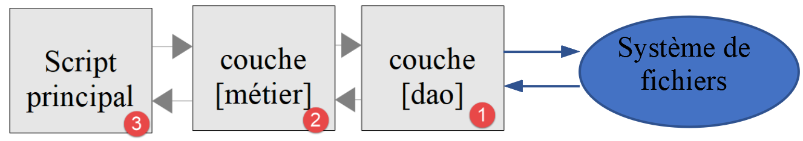

11. Esercizio pratico – Versione 4
L'applicazione per il calcolo delle imposte implementerà la seguente architettura a livelli:

Riutilizzeremo gli elementi della versione 3 della sezione collegata, modificandoli per adattarli alla nuova architettura dell'applicazione. Questo processo viene talvolta chiamato "rifattorizzazione". In questo caso, supponiamo che i dati richiesti dall'applicazione siano memorizzati in file di testo. Il livello [Dao] gestirà le interazioni con questi file.
11.1. Albero degli script

11.2. Oggetti scambiati tra i livelli
Manterremo alcuni oggetti della versione 3. Li elenchiamo qui a titolo di promemoria.
L'eccezione [ExceptionImpots] è l'eccezione che il livello [Dao] genererà quando incontra un problema relativo all'accesso ai dati o alla natura dei dati (dati errati).
<?php
// namespace
namespace Application;
class ExceptionImpots extends \RuntimeException {
public function __construct(string $message, int $code=0) {
parent::__construct($message, $code);
}
}
La classe [Utilities] contiene metodi utili per la gestione dei file di testo (in questo caso, un unico metodo):
<?php
// namespace
namespace Application;
// a class of utility functions
abstract class Utilitaires {
public static function cutNewLinechar(string $ligne): string {
// delete the end-of-line mark from $ligne if it exists
$longueur = strlen($ligne); // line length
while (substr($ligne, $longueur - 1, 1) == "\n" or substr($ligne, $longueur - 1, 1) == "\r") {
$ligne = substr($ligne, 0, $longueur - 1);
$longueur--;
}
// end - return the line
return($ligne);
}
}
La classe [TaxAdminData] è la classe che incapsula i dati relativi all'amministrazione fiscale:
<?php
namespace Application;
class TaxAdminData {
// tax brackets
private $limites;
private $coeffR;
private $coeffN;
// tax calculation constants
private $plafondQfDemiPart;
private $plafondRevenusCelibatairePourReduction;
private $plafondRevenusCouplePourReduction;
private $valeurReducDemiPart;
private $plafondDecoteCelibataire;
private $plafondDecoteCouple;
private $plafondImpotCouplePourDecote;
private $plafondImpotCelibatairePourDecote;
private $abattementDixPourcentMax;
private $abattementDixPourcentMin;
// initialization
public function setFromJsonFile(string $taxAdminDataFilename): TaxAdminData {
// retrieve the contents of the tax data file
$fileContents = \file_get_contents($taxAdminDataFilename);
…
// we return the object
return $this;
}
private function check($value): \stdClass {
…
return $result;
}
// toString
public function __toString() {
// object's Json string
return \json_encode(\get_object_vars($this), JSON_UNESCAPED_UNICODE);
}
// getters and setters
public function getLimites() {
return $this->limites;
}
…
public function setLimites($limites) {
$this->limites = $limites;
return $this;
}
…
}
Aggiungiamo una nuova classe [TaxPayerData] che incapsula i dati scritti nel file dei risultati:
<?php
// namespace
namespace Application;
// data class
class TaxPayerData {
// data required to calculate the taxpayer's tax liability
private $marié;
private $enfants;
private $salaire;
// tax calculation results
private $montant;
private $surcôte;
private $décôte;
private $réduction;
private $taux;
// setter
public function setFromParameters(string $marié, int $nbEnfants, int $salaireAnnuel) : TaxPayerData{
// taxpayer data required for tax calculation
$this->marié = $marié;
$this->enfants = $nbEnfants;
$this->salaire = $salaireAnnuel;
// initialize the object
return $this;
}
// getters and setters
public function getMarié() {
return $this->marié;
}
…
public function setMarié($marié) {
$this->marié = $marié;
return $this;
}
…
// toString
public function __toString() {
// object's Json string
return \json_encode(\get_object_vars($this), JSON_UNESCAPED_UNICODE);
}
}
Nota: utilizzare la generazione automatica del codice per generare il costruttore, i getter e i setter (vedere la sezione collegata). Si noti che i setter sono "fluenti".
11.3. Il livello [DAO]
Qui ci concentriamo sul livello [1] della nostra applicazione:

11.3.1. L'interfaccia [InterfaceDao]
L'interfaccia per il livello [DAO] sarà la seguente [InterfaceDao.php]:
<?php
// namespace
namespace Application;
interface InterfaceDao {
// reading taxpayer data
public function getTaxPayersData(string $taxPayersFilename, string $errorsFilename): array;
// reading tax data (tax brackets)
public function getTaxAdminData(): TaxAdminData;
// recording results
public function saveResults(string $resultsFilename, array $taxPayersData): void;
}
Commenti
- I requisiti sono i seguenti:
- I dati del contribuente sono memorizzati in un file di testo;
- i risultati del calcolo delle imposte vengono salvati in un file di testo;
- Eventuali errori vengono salvati in un file di testo;
- non è noto in quale formato siano disponibili i dati dell'autorità fiscale. Per ogni nuovo formato, l'interfaccia [InterfaceDao] deve essere implementata da una nuova classe;
- i metodi dell'interfaccia che incontrano un errore fatale durante l'accesso ai dati devono generare un'eccezione di tipo [TaxException];
- riga 9: il metodo che recupera i dati del contribuente [stato civile, numero di figli, stipendio annuo];
- il primo parametro è il nome del file di testo contenente questi dati;
- il secondo parametro è il nome del file di testo in cui registrare eventuali errori riscontrati;
- riga 12: il metodo che recupera i dati dall'autorità fiscale. Qui non vengono passati parametri perché non sappiamo come sono memorizzati i dati;
- riga 15: il metodo utilizzato per salvare i risultati del calcolo delle imposte in un file di testo, il cui nome viene passato come parametro;
Quando scriviamo l'interfaccia [InterfaceDao], sappiamo che ci saranno diversi modi per implementare il metodo [getTaxAdminData] a seconda di come sono memorizzati i dati dell'amministrazione fiscale. L'interfaccia [InterfaceDao] sarà quindi implementata da diverse classi, ciascuna delle quali gestirà un metodo di archiviazione specifico per questi dati (array, file di testo, database, servizi web). Queste classi derivate condivideranno comunque del codice comune, in particolare l'implementazione dei metodi [getTaxPayersData] e [saveResults]. Sappiamo che questo caso d'uso può essere implementato in due modi (vedi paragrafo collegato):
- Creiamo una classe astratta C che contiene il codice comune alle classi derivate. La classe C implementa l'interfaccia I, ma alcuni metodi che devono essere dichiarati nelle classi derivate sono dichiarati come astratti nella classe C, e quindi la classe C stessa è astratta. Creiamo quindi le classi C1 e C2 derivate da C, ciascuna delle quali implementa a modo proprio i metodi non definiti (astratti) della propria classe padre C;
- creiamo un trait T che è quasi identico alla classe astratta C della soluzione precedente. Questo trait non implementa l'interfaccia I perché, sintatticamente, non può farlo. Creiamo quindi le classi C1 e C2 che implementano l'interfaccia I e utilizzano il trait T. A queste classi non resta che implementare i metodi dell'interfaccia I che non sono implementati dal trait T che importano;
Per questo esempio, useremo qui un trait [TraitDao].
11.3.2. Il trait [TraitDao]
Il codice per il trait [TraitDao] è il seguente [TraitDao.php]:
<?php
// namespace
namespace Application;
trait TraitDao {
// reading taxpayer data
public function getTaxPayersData(string $taxPayersFilename, string $errorsFilename): array {
// taxpayer data table
$taxPayersData = [];
// error table
$errors = [];
// many errors can occur when managing files
try {
// reading user data
// each line has the form marital status, number of children, annual salary
$taxPayersFile = fopen($taxPayersFilename, "r");
if (!$taxPayersFile) {
throw new ExceptionImpots("Impossible d'ouvrir en lecture les déclarations des contribuables [$taxPayersFilename]", 12);
}
// the current line of the user data file is used
// in the form of marital status, number of children, annual salary
$num = 1; // n° current line
$nbErreurs = 0; // number of errors encountered
while ($ligne = fgets($taxPayersFile, 100)) {
// empty lines are neglected
$ligne = trim($ligne);
if (strlen($ligne) == 0) {
// next line
$num++;
// we loop again
continue;
}
// remove any end-of-line marker
$ligne = Utilitaires::cutNewLineChar($ligne);
// we retrieve the 3 fields married:children:salary which form $ligne
list($marié, $enfants, $salaire) = explode(",", $ligne);
// we check them
// marital status must be yes or no
$marié = trim(strtolower($marié));
$erreur = ($marié !== "oui" and $marié !== "non");
if (!$erreur) {
// the number of children must be an integer
$enfants = trim($enfants);
if (!preg_match("/^\d+$/", $enfants)) {
$erreur = TRUE;
} else {
$enfants = (int) $enfants;
}
}
if (!$erreur) {
// the salary is a whole number without the euro cents
$salaire = trim($salaire);
if (!preg_match("/^\d+$/", $salaire)) {
$erreur = TRUE;
} else {
$salaire = (int) $salaire;
}
}
// mistake?
if ($erreur) {
$errors[] = "la ligne [$num] du fichier [$taxPayersFilename] est erronée";
$nbErreurs++;
} else {
// memorize information
$taxPayersData[] = (new TaxPayerData())->setFromParameters($marié, $enfants, $salaire);
}
// next line
$num++;
}
// are we at the end of the file?
if (!feof($taxPayersFile)) {
// we're out of the loop on a read error
throw new ExceptionImpots("Erreur lors de la lecture de la ligne n° [$num] du fichier [$taxPayersFilename]");
} else {
// we're out of the loop at the end-of-file mark
// save errors in a text file
$this->saveString($errorsFilename, implode("\n", $errors));
// function result
return $taxPayersData;
}
} finally {
// close the file if it is open
if ($taxPayersFile) {
fclose($taxPayersFile);
}
}
}
// recording results
public function saveResults(string $resultsFilename, array $taxPayersData): void {
// save table [$taxPayersData] in text file [$resultsFileName]
// if text file [$resultsFileName] does not exist, it is created
$this->saveString($resultsFilename, implode("\n", $taxPayersData));
}
// saving table results in a text file
private function saveString(string $fileName, string $data): void {
// save table [$data] in text file [$fileName]
// if text file [$fileName] does not exist, it is created
if (file_put_contents($fileName, $data) === FALSE) {
throw new ExceptionImpots("Erreur lors de l'enregistrement de données dans le fichier texte [$fileName]");
}
}
}
Commenti
- riga 6: qui definiamo un trait, non una classe;
- righe 9–89: il metodo [getTaxPayersData] implementa il metodo omonimo dell'interfaccia [InterfaceDao]. Recupera i dati dei contribuenti [stato civile, numero di figli, stipendio annuo ] da un file di testo denominato [$taxPayersFilename]. Restituisce questi dati come un array [$taxPayersData] di elementi di tipo [TaxPayerData] (righe 67, 81);
- il metodo [getTaxPayersData] è molto simile al metodo [AbstractBaseImpots::executeBatchImpots] descritto nella sezione collegata, con le seguenti differenze:
- il metodo [getTaxPayersData] recupera solo i dati dei contribuenti. Non esegue alcun calcolo fiscale. Qui, questo è il ruolo del livello [business];
- Proprio come il metodo [executeBatchImpots], segnala gli errori. In questo caso, gli errori vengono prima memorizzati in un array [$errors] (riga 13), che viene poi salvato in un file di testo al termine del processo (riga 79). A seconda della situazione, questo array può essere vuoto o meno;
- in caso di errore fatale, viene generata un'eccezione [ExceptionImpots] (righe 20, 75);
- riga 73: si noti l'elaborazione eseguita all'uscita dal ciclo nelle righe 26–71. Infatti, la funzione [fgets] presenta l'inconveniente di restituire il valore booleano FALSE sia quando la lettura delle righe incontra il marcatore di fine file, sia quando la lettura fallisce a causa di un errore. Per distinguere tra i due casi, verifichiamo se abbiamo raggiunto la fine del file utilizzando la funzione [feof]. Se non abbiamo raggiunto la fine del file, significa che si è verificato un errore e quindi generiamo un'eccezione;
- righe 83–88: il blocco [finally] viene eseguito indipendentemente dal fatto che si sia verificata un'eccezione durante l'elaborazione del file;
- riga 85: se il file è stato aperto, l'handle del file [$taxPayersFile] ha il valore booleano TRUE; altrimenti è FALSE;
- righe 99–105: il metodo privato [saveString] utilizzato alla riga 79 per salvare l'array degli errori in un file di testo;
- riga 99: il metodo [saveString] accetta due parametri:
- [string $filename], che è il nome del file di testo utilizzato per salvare i dati;
- [string $data], che è la stringa da salvare nel file di testo. Questa stringa sarà una sequenza di righe terminate dal carattere di nuova riga \n;
- riga 102: la funzione PHP [file_puts_contents] scrive una stringa in un file di testo. Apre il file, vi scrive la stringa e chiude il file. Restituisce FALSE se si verifica un errore;
- riga 103: se si verifica un errore, viene generata un'eccezione;
- righe 92–96: implementazione del metodo [saveResults] dell'interfaccia [InterfaceDao]. Viene nuovamente utilizzato il metodo privato [saveString]. In questo caso, il secondo parametro di [saveString] è una stringa costruita a partire dall'array [$taxPayersData], i cui elementi sono di tipo [TaxPayerData]. Ci si potrebbe chiedere quale sarà il risultato dell'operazione:
implode("\n", $taxPayersData)
Abbiamo definito il seguente metodo [__toString] nella classe [TaxPayerData] (vedere la sezione collegata):
public function __toString() {
// chaîne Json de l'objet
return \json_encode(\get_object_vars($this), JSON_UNESCAPED_UNICODE);
}
L'operazione
implode("\n", $taxPayersData)
concatenerà ogni elemento dell'array [$taxPayersData] — convertito in stringa dal suo metodo [__toString] — con il carattere di nuova riga \n. Il risultato sarà una stringa della forma:
json1\njson2\n…
Conclusione
Il trait [TraitDao] ha implementato due dei metodi dell'interfaccia [InterfaceDao], [getTaxPayersData] e [saveResults]:
<?php
// namespace
namespace Application;
interface InterfaceDao {
// reading taxpayer data
public function getTaxPayersData(string $taxPayersFilename, string $errorsFilename): array;
// reading tax data (tax brackets)
public function getTaxAdminData(): TaxAdminData;
// recording results
public function saveResults(string $resultsFilename, array $taxPayersData): void;
}
Dobbiamo ancora implementare il metodo [getTaxAdminData], che recupera i dati dall'amministrazione fiscale.
11.3.3. La classe [ImpotsWithTaxAdminDataInJsonFile]
La classe [ImpotsWithTaxAdminDataInJsonFile] implementa l'interfaccia [InterfaceDao] come segue:
<?php
// namespace
namespace Application;
// definition of a ImpotsWithDataInFile class
class DaoImpotsWithTaxAdminDataInJsonFile implements InterfaceDao {
// use of a line
use TraitDao;
// the TaxAdminData object containing tax bracket data
private $taxAdminData;
// the manufacturer
public function __construct(string $taxAdminDataFilename) {
// we want to initialize the [$this->taxAdminData] attribute
$this->taxAdminData = (new TaxAdminData())->setFromJsonFile($taxAdminDataFilename);
}
// returns data for tax calculation
public function getTaxAdminData(): TaxAdminData {
return $this->taxAdminData;
}
}
Commenti
- riga 7: la classe [ImpotsWithTaxAdminDataInJsonFile] implementa l'interfaccia [InterfaceDao];
- riga 9: la classe [ImpotsWithTaxAdminDataInJsonFile] utilizza il tratto [traitDao], che, come sappiamo, implementa i metodi [getTaxPayersData] e [saveResults] dell'interfaccia [InterfaceDao]. Resta quindi solo da implementare, nella classe [ImpotsWithTaxAdminDataInJsonFile], il metodo [getTaxAdminData], che recupera i dati dall'amministrazione fiscale;
- Riga 11: l'attributo di tipo [TaxAdminData] restituito dal metodo [getTaxAdminData] alle righe 20–22. Questo attributo viene inizializzato dal costruttore alle righe 14–17;
Abbiamo ora completato il livello [DAO] della nostra applicazione: disponiamo di una classe che implementa pienamente l'interfaccia [InterfaceDao] che abbiamo definito. Possiamo ora passare al livello [business].
11.4. Il livello [business]
Ora implementeremo il livello [2] della nostra architettura:

11.4.1. L'interfaccia [InterfaceMétier]
L'interfaccia per il livello [business] sarà la seguente:
<?php
// namespace
namespace Application;
interface InterfaceMetier {
// calculating a taxpayer's taxes
public function calculerImpot(string $marié, int $enfants, int $salaire): array;
// batch mode tax calculation
public function executeBatchImpots(string $taxPayersFileName, string $resultsFileName, string $errorsFileName): void;
}
Commenti
- riga 9: l'interfaccia [BusinessInterface] è in grado di calcolare l'importo delle imposte per un singolo contribuente, a condizione che le vengano fornite le seguenti informazioni: stato civile, numero di figli, stipendio annuo. Il metodo [calculateTax] non utilizza il livello [DAO], quindi non genera eccezioni;
- Riga 9: L'interfaccia [BusinessInterface] può anche calcolare l'importo delle imposte per un gruppo di contribuenti i cui dati sono raccolti nel file di testo denominato [$taxPayersFileName]. Scrive i risultati in un file di testo denominato [$resultsFileName]. Il metodo [executeBatchImpots] deve comunicare con il livello [dao], che gestisce l'accesso al file system. Le eccezioni possono quindi propagarsi dal livello [dao], che il metodo [executeBatchImpots] non intercetterà: consentirà loro di propagarsi allo script principale. Gli errori non fatali vengono registrati nel file di testo denominato [$errorsFileName];
- riga 9: il metodo [calculateTax] è un metodo puramente [business]. Non si occupa della fonte dei dati che utilizza;
- riga 12: il metodo [executeBatchImpots] interagirà con il livello [dao] per leggere e scrivere dati nei file di testo. Chiamerà ripetutamente il metodo business [calculerImpot];
11.4.2. La classe [Business]
La classe [Metier] implementa l'interfaccia [InterfaceMetier] come segue:
<?php
// namespace
namespace Application;
class Metier implements InterfaceMetier {
// dao layer
private $dao;
// tax administration data
private $taxAdminData;
//---------------------------------------------
// setter couche [dao]
public function setDao(InterfaceDao $dao) {
$this->dao = $dao;
return $this;
}
public function __construct(InterfaceDao $dao) {
// a reference is stored on the [dao] layer
$this->dao = $dao;
// recover data for tax calculation
// method [getTaxAdminData] may throw a ExceptionImpots exception
// we then let it go back to the calling code
$this->taxAdminData = $this->dao->getTaxAdminData();
}
// tAX CALCULATION
// --------------------------------------------------------------------------
public function calculerImpot(string $marié, int $enfants, int $salaire): array {
…
// result
return ["impôt" => floor($impot), "surcôte" => $surcôte, "décôte" => $décôte, "réduction" => $réduction, "taux" => $taux];
}
// --------------------------------------------------------------------------
private function calculerImpot2(string $marié, int $enfants, float $salaire): array {
…
// result
return ["impôt" => $impôt, "surcôte" => $surcôte, "taux" => $coeffR[$i]];
}
// revenuImposable=annualwage-discount
// the allowance has a minimum and a maximum
private function getRevenuImposable(float $salaire): float {
…
// result
return floor($revenuImposable);
}
// calculates any discount
private function getDecôte(string $marié, float $salaire, float $impots): float {
…
// result
return ceil($décôte);
}
// calculates any reduction
private function getRéduction(string $marié, float $salaire, int $enfants, float $impots): float {
…
// result
return ceil($réduction);
}
// batch mode tax calculation
public function executeBatchImpots(string $taxPayersFileName, string $resultsFileName, string $errorsFileName): void {
…
// recording results
$this->dao->saveResults($resultsFileName, $results);
}
}
Commenti
- riga 6: la classe [Business] implementa l'interfaccia [BusinessInterface], ovvero i metodi [calculateTax] (righe 30–34) e [executeBatchTaxes] (righe 66–70);
- riga 8: un riferimento al livello [dao]. Questo è necessario affinché il livello [business] sappia dove cercare quando ha bisogno di dati esterni. Questo attributo verrà inizializzato tramite il setter nelle righe 14–17 o tramite il costruttore nelle righe 19–26;
- riga 10: l'oggetto di tipo [TaxAdminData] che incapsula i dati dell'amministrazione fiscale. Questi dati sono richiesti dal metodo di business [calculateTax]. Questo attributo viene inizializzato tramite il costruttore nelle righe 19–26;
- righe 19–26: il costruttore inizializza i due attributi della classe:
- l'attributo [$dao] viene inizializzato con il riferimento passato come parametro al costruttore. Si noti che il tipo di questo parametro è quello dell'interfaccia [InterfaceDao], consentendo alla classe [Metier] di essere inizializzata da qualsiasi classe che implementi questa interfaccia;
- l'attributo [$taxAdminData] viene inizializzato chiamando il metodo [getTaxAdminData] del livello [dao];
Concludiamo che quando vengono eseguiti i metodi [calculateTaxes] e [executeBatchTaxes], entrambi gli attributi [$dao] e [$taxAdminData] vengono inizializzati.
Il metodo [calculateTaxes] è il seguente:
public function calculerImpot(string $marié, int $enfants, int $salaire): array {
// $marié : oui, non
// $enfants : nombre d'enfants
// $salaire : salaire annuel
// $this->taxAdminData : données de l'administration fiscale
//
// on vérifie qu'on a bien les données de l'administration fiscale
if ($this->taxAdminData === NULL) {
$this->taxAdminData = $this->getTaxAdminData();
}
// calcul de l'impôt avec enfants
$result1 = $this->calculerImpot2($marié, $enfants, $salaire);
$impot1 = $result1["impôt"];
// calcul de l'impôt sans les enfants
if ($enfants != 0) {
$result2 = $this->calculerImpot2($marié, 0, $salaire);
$impot2 = $result2["impôt"];
// application du plafonnement du quotient familial
$plafonDemiPart = $this->taxAdminData->getPlafondQfDemiPart();
if ($enfants < 3) {
// $PLAFOND_QF_DEMI_PART euros pour les 2 premiers enfants
$impot2 = $impot2 - $enfants * $plafonDemiPart;
} else {
// $PLAFOND_QF_DEMI_PART euros pour les 2 premiers enfants, le double pour les suivants
$impot2 = $impot2 - 2 * $plafonDemiPart - ($enfants - 2) * 2 * $plafonDemiPart;
}
} else {
$impot2 = $impot1;
$result2 = $result1;
}
// on prend l'impôt le plus fort
if ($impot1 > $impot2) {
$impot = $impot1;
$taux = $result1["taux"];
$surcôte = $result1["surcôte"];
} else {
$surcôte = $impot2 - $impot1 + $result2["surcôte"];
$impot = $impot2;
$taux = $result2["taux"];
}
// calcul d'une éventuelle décôte
$décôte = $this->getDecôte($marié, $salaire, $impot);
$impot -= $décôte;
// calcul d'une éventuelle réduction d'impôts
$réduction = $this->getRéduction($marié, $salaire, $enfants, $impot);
$impot -= $réduction;
// résultat
return ["impôt" => floor($impot), "surcôte" => $surcôte, "décôte" => $décôte, "réduction" => $réduction, "taux" => $taux];
}
Commenti
- Questo codice proviene dal metodo [AbstractBaseImpots::calculateTax] della versione 3, come spiegato nella sezione collegata. Lo stesso vale per i metodi privati [calculateTax2, getDiscount, getReduction, getTaxableIncome];
Il metodo [Metier::executeBatchImpots] è il seguente:
public function executeBatchImpots(string $taxPayersFileName, string $resultsFileName, string $errorsFileName): void {
// we let the exceptions coming from the [dao] layer flow upwards
// retrieve taxpayer data
$taxPayersData = $this->dao->getTaxPayersData($taxPayersFileName, $errorsFileName);
// results table
$results = [];
// we exploit them
foreach ($taxPayersData as $taxPayerData) {
// tax calculation
$result = $this->calculerImpot(
$taxPayerData->getMarié(),
$taxPayerData->getEnfants(),
$taxPayerData->getSalaire());
// complete [$taxPayerData]
$taxPayerData->setMontant($result["impôt"]);
$taxPayerData->setDécôte($result["décôte"]);
$taxPayerData->setSurCôte($result["surcôte"]);
$taxPayerData->setTaux($result["taux"]);
$taxPayerData->setRéduction($result["réduction"]);
// put the result in the results table
$results [] = $taxPayerData;
}
// recording results
$this->dao->saveResults($resultsFileName, $results);
}
Commenti
- riga 1: il metodo deve chiamare ripetutamente il metodo [calculateTax] per ciascun contribuente presente nel file di testo denominato [$taxPayersFileName]. Deve scrivere i risultati nel file di testo denominato [$resultsFileName]. Gli errori non fatali riscontrati vengono registrati nel file di testo denominato [$errorsFileName]. Il metodo non genera eccezioni ma permette a quelle generate dal livello [dao] di propagarsi;
- Riga 4: i dati dei contribuenti vengono richiesti al livello [dao]. Questo restituisce un array di elementi di tipo [TaxPayerData], che è una classe di attributi [married, numberOfChildren, salary, amount, deduction, reduction, surcharge, rate] (vedi paragrafo collegato). Se qui si verifica un'eccezione, poiché non viene intercettata da un blocco catch, si propagherà automaticamente al codice chiamante. Ciò significa che, in caso di eccezione, la riga 6 non viene eseguita;
- riga 6: l'array dei risultati di tipo [TaxPayerData];
- righe 8–22: l'imposta viene calcolata per ciascun elemento dell'array dei contribuenti [$taxPayersData]. A tal fine, viene chiamato il metodo interno [calculateTax] (riga 10);
- righe 15–19: il risultato viene utilizzato per inizializzare gli attributi di [TaxPayerData] che non erano ancora stati inizializzati;
- riga 21: il risultato viene aggiunto all'array dei risultati [$results];
- riga 24: una volta calcolata l'imposta per tutti i contribuenti, i risultati vengono salvati in un file di testo. Il livello [dao] si occupa di questa operazione;
Conclusione
In generale, il livello [business] è abbastanza semplice da scrivere perché si interfaccia con il livello [DAO], che gestisce l'accesso ai dati insieme alla gestione degli errori associati.
11.5. Lo script principale
Ora scriveremo lo script per il livello [3] della nostra architettura:

Lo script principale è il seguente [main.php]:
<?php
// strict adherence to declared types of function parameters
declare (strict_types=1);
// namespace
namespace Application;
// error handling by PHP
//ini_set("display_errors", "0");
// interface and class inclusion
require_once __DIR__ . "/TaxAdminData.php";
require_once __DIR__ . "/TaxPayerData.php";
require_once __DIR__ . "/ExceptionImpots.php";
require_once __DIR__ . "/Utilitaires.php";
require_once __DIR__ . "/InterfaceDao.php";
require_once __DIR__ . "/TraitDao.php";
require_once __DIR__ . "/DaoImpotsWithTaxAdminDataInJsonFile.php";
require_once __DIR__ . "/InterfaceMetier.php";
require_once __DIR__ . "/Metier.php";
// test -----------------------------------------------------
// definition of constants
const TAXPAYERSDATA_FILENAME = "taxpayersdata.txt";
const RESULTS_FILENAME = "resultats.txt";
const ERRORS_FILENAME = "errors.txt";
const TAXADMINDATA_FILENAME = "taxadmindata.json";
try {
// creation of the [dao] layer
$dao = new DaoImpotsWithTaxAdminDataInJsonFile(TAXADMINDATA_FILENAME);
// creation of the [business] layer
$métier = new Metier($dao);
// tax calculation in batch mode
$métier->executeBatchImpots(TAXPAYERSDATA_FILENAME, RESULTS_FILENAME, ERRORS_FILENAME);
} catch (ExceptionImpots $ex) {
// error is displayed
print $ex->getMessage() . "\n";
}
// end
print "Terminé\n";
exit;
Commenti
- Riga 24: il nome del file dei dati del contribuente;
- riga 25: il nome del file dei risultati;
- riga 26: il nome del file degli errori;
- riga 27: il nome del file JSON contenente i dati dell'autorità fiscale;
- riga 31: creazione del livello [dao];
- riga 33: creazione del livello [business] basato su questo livello [dao];
- riga 35: esecuzione del metodo [executeBatchImpots] del livello [business];
- righe 36–39: abbiamo visto che il livello [business] potrebbe generare delle eccezioni. Queste vengono intercettate qui;
11.6. Test visivi
11.6.1. Test n. 1
Con il seguente file dei contribuenti [taxpayersdata.txt]:
oui,2,55555
oui,2,50000
oui,3,50000
non,2,100000
non,3x,100000
oui,3,100000
oui,5,100000x
non,0,100000
oui,2,30000
non,0,200000
oui,3,200000
Otteniamo il seguente file di errore [errors.txt]:
la ligne [5] du fichier [taxpayersdata.txt] est erronée
la ligne [7] du fichier [taxpayersdata.txt] est erronée
e il seguente file dei risultati [resultats.txt]:
11.6.2. Test n. 2
Nello script principale, assegniamo un nome di file inesistente al file del contribuente:
I risultati visualizzati nella console sono i seguenti:
Warning: fopen(taxpayersdata2.txt): failed to open stream: No such file or directory in C:\Data\st-2019\dev\php7\poly\scripts-console\impots\version-04\TraitDao.php on line 18
Impossible d'ouvrir en lecture les déclarations des contribuables [taxpayersdata2.txt]
Terminé
Done.
- riga 1: avvisi dall'interprete PHP;
- riga 2: messaggio di errore derivante dall'eccezione generata dal livello [dao];
È possibile sopprimere i messaggi di errore dell'interprete PHP:

La riga 21 del codice sopra riportato indica al sistema di non visualizzare gli errori PHP. Durante la fase di sviluppo, è necessario che vengano visualizzati. In modalità produzione, devono essere nascosti.
I risultati dell'esecuzione sono quindi i seguenti:
Impossible d'ouvrir en lecture les déclarations des contribuables [taxpayersdata2.txt]
Terminé
11.7. Test [Codeception]
I test visivi sono del tutto inadeguati:
- in genere ci limitiamo a pochi test;
- potremmo non prestare sufficiente attenzione durante questa ispezione visiva e alcuni dettagli potrebbero sfuggirci;
Nel mondo reale dello sviluppo professionale, i test sono scritti da persone dedicate per le quali questo è il ruolo principale. Si impegnano a rendere i test il più completi possibile. Per farlo, utilizzano framework di test.
Qui useremo il framework Codeception [https://codeception.com/] perché può essere integrato in NetBeans. È un framework con un'ampia gamma di funzionalità. Ne useremo solo alcune. L'idea è quella di avere un modo rapido, dopo ogni nuova versione dell'esercizio dell'applicazione, per verificare che funzioni. L'esistenza di test riusciti dà allo sviluppatore fiducia nel codice che ha scritto. Questo è un fattore importante.
11.7.1. Installazione del framework [Codeception]
Come molte librerie PHP, il framework [Codeception] si installa utilizzando [Composer]. Quindi apriamo un terminale Laragon (vedi link nel paragrafo).
Per prima cosa, dobbiamo installare il framework di test PHPUnit [https://phpunit.de/]. Questo perché Codeception utilizza il framework PHPUnit dietro le quinte:

Successivamente, installiamo il framework Codeception:

Ecco fatto. Ora vediamo come integrare [Codeception] in NetBeans.
11.7.2. Integrazione di [Codeception] in NetBeans

- In [1-2], accedi alle proprietà del progetto;
- Nei [3-4] abbiamo scelto [Codeception] come uno dei framework di test del progetto;


- In [5-8], inizializza il framework [Codeception] per il progetto;

- In [9] è stata creata una cartella [tests], insieme a un file di configurazione [codeception.yml] in [10-11]. Il file [11] è identico al file [10]. Codeception ha semplicemente creato una cartella [Important Files] per assegnare al file [10] una designazione speciale;
- in [12-13], torniamo alle proprietà del progetto;

- in [14-16], la cartella [tests] [16] viene designata come cartella di test del progetto;
- in [16], la cartella [tests] appare quindi con il nuovo nome [Test Files]. La presenza di questa cartella in un progetto PHP indica che il progetto incorpora un framework di test unitari;
- creeremo i nostri test nella cartella [unit] [17];
11.7.3. Test per il livello [dao]

- Creeremo tutti i nostri test nella cartella [unit] [1];
- I nomi delle classi di test [Codeception] devono terminare con la parola chiave [Test], altrimenti le classi non saranno riconosciute come classi di test;
Le nostre classi di test [Codeception] avranno il seguente formato [https://codeception.com/docs/05-UnitTests]:
<?php
// strict adherence to declared types of function parameters
declare (strict_types=1);
// namespace
namespace Application;
// loading the test environment
…
class DaoTest extends \Codeception\Test\Unit {
// test attributes
private $attribut1;
public function __construct() {
parent::__construct();
// test environment initialization
…
}
// tests
public function testTaxAdminData() {
// tests
$this->assertEquals($expected, $actual);
$this->assertEqualsWithDelta($expected, $actual, $delta);
$this->assertTrue($actual);
$this->assertFalse($actual);
$this->assertNull($actual);
$this->assertEmpty($actual);
$this→assertSame($expected, $actual);
…
}
}
Commenti
- riga 7: le classi di test si troveranno nello stesso namespace dell'applicazione sottoposta a test;
- righe 9–10: qui sono presenti le istruzioni [require] per caricare le classi e le interfacce sottoposte a test;
- riga 12: il nome della classe di test deve terminare con la parola chiave [Test]. Questa classe deve estendere la classe [\Codeception\Test\Unit];
- righe 16–20: il costruttore ci permette di inizializzare l'ambiente di test;
- riga 23: i nomi dei metodi di test devono iniziare con la parola chiave [test];
- righe 25–31: è possibile utilizzare vari metodi di test;
La classe di test [DaoTest] sarà la seguente:
<?php
// strict adherence to declared types of function parameters
declare (strict_types=1);
// namespace
namespace Application;
// constants
define("ROOT", "C:/Data/st-2019/dev/php7/poly/scripts-console/impots/version-04");
define("VENDOR", "C:/myprograms/laragon-lite/www/vendor");
// interface and class inclusion
require_once ROOT . "/TaxAdminData.php";
require_once ROOT . "/TaxPayerData.php";
require_once ROOT . "/ExceptionImpots.php";
require_once ROOT . "/Utilitaires.php";
require_once ROOT . "/InterfaceDao.php";
require_once ROOT . "/TraitDao.php";
require_once ROOT . "/DaoImpotsWithTaxAdminDataInJsonFile.php";
require_once ROOT . "/InterfaceMetier.php";
require_once ROOT . "/Metier.php";
require_once VENDOR. "/autoload.php";;
// test -----------------------------------------------------
// definition of constants
const TAXADMINDATA_FILENAME = "taxadmindata.json";
class DaoTest extends \Codeception\Test\Unit {
// TaxAdminData
private $taxAdminData;
public function __construct() {
parent::__construct();
// creation of the [dao] layer
$dao = new DaoImpotsWithTaxAdminDataInJsonFile(ROOT . "/" . TAXADMINDATA_FILENAME);
$this->taxAdminData = $dao->getTaxAdminData();
}
// tests
public function testTaxAdminData() {
…
}
}
Commenti
Per creare i test relativi a una versione dell'applicazione, utilizzeremo un ambiente identico a quello utilizzato dallo script principale della versione. Per la versione 04, si tratta del seguente script [main.php]:
<?php
// strict adherence to declared types of function parameters
declare (strict_types=1);
// namespace
namespace Application;
// error handling by PHP
ini_set("display_errors", "0");
// interface and class inclusion
require_once __DIR__ . "/TaxAdminData.php";
require_once __DIR__ . "/TaxPayerData.php";
require_once __DIR__ . "/ExceptionImpots.php";
require_once __DIR__ . "/Utilitaires.php";
require_once __DIR__ . "/InterfaceDao.php";
require_once __DIR__ . "/TraitDao.php";
require_once __DIR__ . "/DaoImpotsWithTaxAdminDataInJsonFile.php";
require_once __DIR__ . "/InterfaceMetier.php";
require_once __DIR__ . "/Metier.php";
// test -----------------------------------------------------
// definition of constants
const TAXPAYERSDATA_FILENAME = "taxpayersdata.txt";
const RESULTS_FILENAME = "resultats.txt";
const ERRORS_FILENAME = "errors.txt";
const TAXADMINDATA_FILENAME = "taxadmindata.json";
try {
// creation of the [dao] layer
$dao = new DaoImpotsWithTaxAdminDataInJsonFile(TAXADMINDATA_FILENAME);
// creation of the [business] layer
$métier = new Metier($dao);
// tax calculation in batch mode
$métier->executeBatchImpots(TAXPAYERSDATA_FILENAME, RESULTS_FILENAME, ERRORS_FILENAME);
} catch (ExceptionImpots $ex) {
// error is displayed
print $ex->getMessage() . "\n";
}
// end
print "Terminé\n";
exit;
Per testare il livello [dao], nella classe di test:
- utilizziamo l'ambiente delle righe 13–27 di [main.php];
- nel costruttore della classe di test, istanziamo il livello [dao] come nella riga 31;
- scriviamo i metodi di test;
Procederemo in questo modo per tutte le classi di test.
Torniamo al codice completo della classe di test:
<?php
// strict adherence to declared types of function parameters
declare (strict_types=1);
// namespace
namespace Application;
// constants
define("ROOT", "C:/Data/st-2019/dev/php7/poly/scripts-console/impots/version-04");
define("VENDOR", "C:/myprograms/laragon-lite/www/vendor");
// interface and class inclusion
require_once ROOT . "/TaxAdminData.php";
require_once ROOT . "/TaxPayerData.php";
require_once ROOT . "/ExceptionImpots.php";
require_once ROOT . "/Utilitaires.php";
require_once ROOT . "/InterfaceDao.php";
require_once ROOT . "/TraitDao.php";
require_once ROOT . "/DaoImpotsWithTaxAdminDataInJsonFile.php";
require_once ROOT . "/InterfaceMetier.php";
require_once ROOT . "/Metier.php";
require_once VENDOR. "/autoload.php";;
// test -----------------------------------------------------
// definition of constants
const TAXADMINDATA_FILENAME = "taxadmindata.json";
class DaoTest extends \Codeception\Test\Unit {
// TaxAdminData
private $taxAdminData;
public function __construct() {
parent::__construct();
// creation of the [dao] layer
$dao = new DaoImpotsWithTaxAdminDataInJsonFile(ROOT . "/" . TAXADMINDATA_FILENAME);
$this->taxAdminData = $dao->getTaxAdminData();
}
// tests
public function testTaxAdminData() {
// calculation constants
$this->assertEquals(1551, $this->taxAdminData->getPlafondQfDemiPart());
$this->assertEquals(21037, $this->taxAdminData->getPlafondRevenusCelibatairePourReduction());
$this->assertEquals(42074, $this->taxAdminData->getPlafondRevenusCouplePourReduction());
$this->assertEquals(3797, $this->taxAdminData->getValeurReducDemiPart());
$this->assertEquals(1196, $this->taxAdminData->getPlafondDecoteCelibataire());
$this->assertEquals(1970, $this->taxAdminData->getPlafondDecoteCouple());
$this->assertEquals(1595, $this->taxAdminData->getPlafondImpotCelibatairePourDecote());
$this->assertEquals(2627, $this->taxAdminData->getPlafondImpotCouplePourDecote());
$this->assertEquals(12502, $this->taxAdminData->getAbattementDixPourcentMax());
$this->assertEquals(437, $this->taxAdminData->getAbattementDixPourcentMin());
// tax brackets
$this->assertSame([9964.0, 27519.0, 73779.0, 156244.0, 0.0], $this->taxAdminData->getLimites());
$this->assertSame([0.0, 0.14, 0.30, 0.41, 0.45], $this->taxAdminData->getCoeffR());
$this->assertSame([0.0, 1394.96, 5798.0, 13913.69, 20163.45], $this->taxAdminData->getCoeffN());
}
}
Commenti
- righe 10–25: caricamento dell'ambiente necessario per il test e definizione delle costanti;
- righe 31–36: creazione del livello [dao] (riga 34), seguita dall'inizializzazione dell'attributo [$taxAdminData] (riga 29). Questo attributo contiene i dati dell'amministrazione fiscale;
- righe 39–55: il singolo metodo di test. Consiste nel verificare che il contenuto dell'attributo [$taxAdminData] corrisponda a quanto previsto;
- righe 41–50: controlli sulle costanti di calcolo delle imposte;
- righe 52–55: controlli sulle fasce di imposta. Il metodo [assertSame] verifica che due entità PHP — in questo caso, array — siano identiche;
Per eseguire questa classe di test, procedere come segue:

- in [1-2], eseguire il test;
- [3]: la finestra dei risultati del test;
- [4]: la classe di test eseguita;
- [5]: i risultati. Qui, il singolo metodo di test è stato superato;
- [6]: quando il test fallisce, o più comunemente quando non è stato eseguito alcun test, controllare la finestra [6]. Il più delle volte, l'ambiente di test non è stato caricato, quindi non è stato possibile eseguire alcun test. Gli errori visualizzati in [6] sono gli stessi che si vedrebbero durante l'esecuzione di uno script PHP standard;
Vediamo un esempio di test fallito:
Nella classe di test, introduciamo un errore nella definizione di una costante:
// constantes
define("ROOT", "C:/Data/st-2019/dev/php7/poly/scripts-console/impots/version-04x");
quindi eseguiamo il test. Il risultato è il seguente:

Nella finestra [4]:

11.7.4. Test del livello [Business]
La classe di test [MetierTest] segue le stesse regole di costruzione della classe [DaoTest], ma presenta un numero maggiore di metodi di test:
<?php
// strict adherence to declared types of function parameters
declare (strict_types=1);
// namespace
namespace Application;
// constants
define("ROOT", "C:/Data/st-2019/dev/php7/poly/scripts-console/impots/version-04");
define("VENDOR", "C:/myprograms/laragon-lite/www/vendor");
// interface and class inclusion
require_once ROOT . "/TaxAdminData.php";
require_once ROOT . "/TaxPayerData.php";
require_once ROOT . "/ExceptionImpots.php";
require_once ROOT . "/Utilitaires.php";
require_once ROOT . "/InterfaceDao.php";
require_once ROOT . "/TraitDao.php";
require_once ROOT . "/DaoImpotsWithTaxAdminDataInJsonFile.php";
require_once ROOT . "/InterfaceMetier.php";
require_once ROOT . "/Metier.php";
require_once VENDOR. "/autoload.php";;
// test -----------------------------------------------------
// definition of constants
const TAXADMINDATA_FILENAME = "taxadmindata.json";
class MetierTest extends \Codeception\Test\Unit {
// business layer
private $métier;
public function __construct() {
parent::__construct();
// creation of the [dao] layer
$dao = new DaoImpotsWithTaxAdminDataInJsonFile(ROOT . "/" . TAXADMINDATA_FILENAME);
// creation of the [business] layer
$this->métier = new Metier($dao);
}
// tests
public function test1() {
$result = $this->métier->calculerImpot("oui", 2, 55555);
$this->assertEqualsWithDelta(2815, $result["impôt"], 1);
$this->assertEqualsWithDelta(0, $result["surcôte"], 1);
$this->assertEqualsWithDelta(0, $result["décôte"], 1);
$this->assertEqualsWithDelta(0, $result["réduction"], 1);
$this->assertEquals(0.14, $result["taux"]);
}
public function test2() {
$result = $this->métier->calculerImpot("oui", 2, 50000);
$this->assertEqualsWithDelta(1385, $result["impôt"], 1);
$this->assertEqualsWithDelta(0, $result["surcôte"], 1);
$this->assertEqualsWithDelta(384, $result["décôte"], 1);
$this->assertEqualsWithDelta(347, $result["réduction"], 1);
$this->assertEquals(0.14, $result["taux"]);
}
public function test3() {
$result = $this->métier->calculerImpot("oui", 3, 50000);
$this->assertEqualsWithDelta(0, $result["impôt"], 1);
$this->assertEqualsWithDelta(0, $result["surcôte"], 1);
$this->assertEqualsWithDelta(720, $result["décôte"], 1);
$this->assertEqualsWithDelta(0, $result["réduction"], 1);
$this->assertEquals(0.14, $result["taux"]);
}
public function test4() {
$result = $this->métier->calculerImpot("non", 2, 100000);
$this->assertEqualsWithDelta(19884, $result["impôt"], 1);
$this->assertEqualsWithDelta(4480, $result["surcôte"], 1);
$this->assertEqualsWithDelta(0, $result["décôte"], 1);
$this->assertEqualsWithDelta(0, $result["réduction"], 1);
$this->assertEquals(0.41, $result["taux"]);
}
public function test5() {
$result = $this->métier->calculerImpot("non", 3, 100000);
$this->assertEqualsWithDelta(16782, $result["impôt"], 1);
$this->assertEqualsWithDelta(7176, $result["surcôte"], 1);
$this->assertEqualsWithDelta(0, $result["décôte"], 1);
$this->assertEqualsWithDelta(0, $result["réduction"], 1);
$this->assertEquals(0.41, $result["taux"]);
}
public function test6() {
$result = $this->métier->calculerImpot("oui", 3, 100000);
$this->assertEqualsWithDelta(9200, $result["impôt"], 1);
$this->assertEqualsWithDelta(2180, $result["surcôte"], 1);
$this->assertEqualsWithDelta(0, $result["décôte"], 1);
$this->assertEqualsWithDelta(0, $result["réduction"], 1);
$this->assertEquals(0.3, $result["taux"]);
}
public function test7() {
$result = $this->métier->calculerImpot("oui", 5, 100000);
$this->assertEqualsWithDelta(4230, $result["impôt"], 1);
$this->assertEqualsWithDelta(0, $result["surcôte"], 1);
$this->assertEqualsWithDelta(0, $result["décôte"], 1);
$this->assertEqualsWithDelta(0, $result["réduction"], 1);
$this->assertEquals(0.14, $result["taux"]);
}
public function test8() {
$result = $this->métier->calculerImpot("non", 0, 100000);
$this->assertEqualsWithDelta(22986, $result["impôt"], 1);
$this->assertEqualsWithDelta(0, $result["surcôte"], 1);
$this->assertEqualsWithDelta(0, $result["décôte"], 1);
$this->assertEqualsWithDelta(0, $result["réduction"], 1);
$this->assertEquals(0.41, $result["taux"]);
}
public function test9() {
$result = $this->métier->calculerImpot("oui", 2, 30000);
$this->assertEqualsWithDelta(0, $result["impôt"], 1);
$this->assertEqualsWithDelta(0, $result["surcôte"], 1);
$this->assertEqualsWithDelta(0, $result["décôte"], 1);
$this->assertEqualsWithDelta(0, $result["réduction"], 1);
$this->assertEquals(0, $result["taux"]);
}
public function test10() {
$result = $this->métier->calculerImpot("non", 0, 200000);
$this->assertEqualsWithDelta(64210, $result["impôt"], 1);
$this->assertEqualsWithDelta(7498, $result["surcôte"], 1);
$this->assertEqualsWithDelta(0, $result["décôte"], 1);
$this->assertEqualsWithDelta(0, $result["réduction"], 1);
$this->assertEquals(0.45, $result["taux"]);
}
public function test11() {
$result = $this->métier->calculerImpot("oui", 3, 200000);
$this->assertEqualsWithDelta(42842, $result["impôt"], 1);
$this->assertEqualsWithDelta(17283, $result["surcôte"], 1);
$this->assertEqualsWithDelta(0, $result["décôte"], 1);
$this->assertEqualsWithDelta(0, $result["réduction"], 1);
$this->assertEquals(0.41, $result["taux"]);
}
}
Commenti
- righe 10–25: caricamento dei file che definiscono l'ambiente di test. È lo stesso procedimento utilizzato per il livello [dao];
- righe 31–37: istanziazione dei livelli [dao] e [business];
- righe 40–47: un test di calcolo delle imposte;
- riga 41: viene eseguito un calcolo fiscale specifico utilizzando il livello [business];
- righe 42–46: verifica che i risultati ottenuti corrispondano a quelli del simulatore dell’autorità fiscale [https://www3.impots.gouv.fr/simulateur/calcul_impot/2019/simplifie/index.htm];
- righe 23–26: vengono eseguiti test di uguaglianza con una tolleranza di 1 euro. Abbiamo infatti osservato che problemi di arrotondamento hanno fatto sì che l’algoritmo del documento producesse i risultati attesi con una tolleranza di 1 euro;
- riga 27: l'aliquota fiscale viene calcolata senza alcun margine di errore;
- righe 49–137: questo tipo di test viene ripetuto 10 volte, ogni volta con una diversa configurazione del contribuente;
I test producono i seguenti risultati:

11.7.5. Test per le versioni future
In futuro, i test per i livelli [dao] e [business] saranno identici a quelli della versione 04. Cambierà solo l'ambiente di test. Presenteremo quindi solo questo ambiente e i risultati dei test.